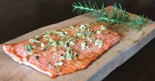

Description
Salmon is a staple that is easily cooked and a healthy part of a diet. I would reccomend wild caught salmon as it is lower in saturated fats and does not have the antiobiotics used in farmed salmon. It is great served with broccoli. The two are a classic combo!
- Wild Caught Salmon
- Olive oil
- Country Dijon Mustard/Mustard of your choosing
Cooking Steps
- Wash the fish under running water.
- Cover a metal tray with aluminum foil.
- Coat the foil with a thin layer of olive oil not directly to the fish as doing so will make the edges cook quicker than the rest of the fish.
- Set the oven to high on the broil setting.
- Place the fish in the oven and allow to cook for 14-15 minutes.
- Remove the fish from the oven and apply your choice of spices or mustard. Use caution for it will be hot!